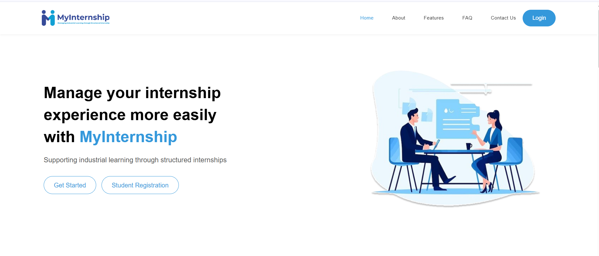
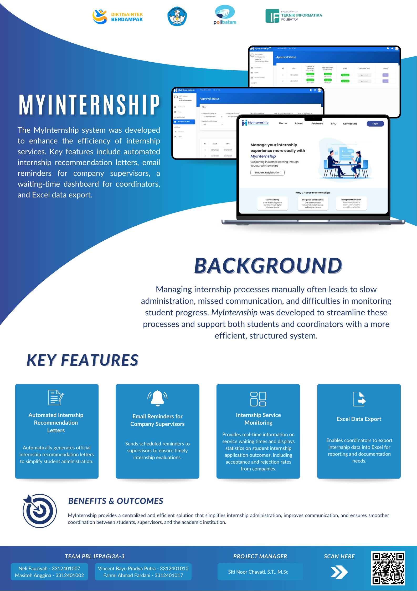

MyInternship
A web-based internship letter submission platform for Politeknik Negeri Batam's Career Development Center (CDC), replacing manual paperwork with a fully digital, integrated workflow for students, lecturers, companies, and CDC admins.
Landing Page Preview

MyInternship — Landing Page
Project Poster

MyInternship — Project Poster
General Description
MyInternship is a web-based platform developed for the Career Development Center (CDC) of Politeknik Negeri Batam to digitalize the internship letter submission process. Previously, students had to submit physical forms, wait for manual signatures, then re-upload documents via external links — a slow and error-prone process.
The system supports four user roles: Student, Lecturer, Company Supervisor, and CDC Admin — each with tailored access to manage their part of the internship workflow.
- Online Submission — Students submit internship letters digitally through the platform anytime, without deadlines.
- Integrated Verification — Lecturers and CDC staff verify and approve submissions entirely online.
- Automated Email Reminder — Companies receive automatic reminders when a student's internship period has ended.
- Analytics Dashboard — Charts showing acceptance/rejection rates and coordinator response times for transparent performance monitoring.
- Excel Export — CDC admins can export structured intern data for reporting and documentation.
Functional & Non-Functional Requirements
a. Functional Requirements
| No | Code | Actor | Description |
|---|---|---|---|
| 1 | FR-1 | All Users | Log in to the system |
| 2 | FR-2 | Student, Lecturer & CDC Admin | View coordinator service response time chart |
| 3 | FR-3 | Student, Lecturer & CDC Admin | View acceptance/rejection percentage chart by company |
| 4 | FR-4 | Lecturer & CDC Admin | View detail of student internship submission letter |
| 5 | FR-5 | Lecturer & CDC Admin | Approve or reject student internship letters |
| 6 | FR-6 | Lecturer & CDC Admin | View list of student internship submissions |
| 7 | FR-7 | Lecturer & CDC Admin | View detail of internship response from company |
| 8 | FR-8 | Lecturer & CDC Admin | Export active intern data to Excel |
| 9 | FR-9 | Student | Register to the MyInternship system |
| 10 | FR-10 | Student | Submit an internship letter application |
| 11 | FR-11 | Student | View internship submission status |
| 12 | FR-12 | Student | Download approved internship letter |
| 13 | FR-13 | Student | View internship application history |
| 14 | FR-14 | Student | Confirm acceptance or rejection of internship offer |
| 15 | FR-15 | Student | Update internship period dates |
| 16 | FR-16 | Supervisor | Receive automatic email reminder when internship ends |
b. Non-Functional Requirements
Internship letters must be generated automatically in ≤ 2 seconds per letter.
Reminder emails must be sent on time to company supervisors when internship ends.
Interface must be simple and easy to understand for all user roles.
Internship letter template must be easy to update if CDC Polibatam changes the format.
Accessible via modern browsers on laptop/PC with no additional installation required.
User Roles & Access Rights
The CDC Admin oversees the entire internship administration process, from final approval of letters to monitoring analytics and exporting data for institutional reporting.
Access Rights
- Final approval or rejection of internship letter submissions.
- View dashboard: acceptance/rejection chart and coordinator response time chart.
- Export active intern data to Excel for documentation and reporting.
- Manage all user accounts and registered company data.
Students are the primary end users who initiate the internship process by submitting digital letters and tracking their application status through the platform.
Access Rights
- Submit: fill and send internship letter form online at any time.
- Track: monitor real-time approval status from lecturer and CDC.
- Download: retrieve the approved internship letter digitally.
- Profile: manage personal account and academic information.
Lecturers act as academic supervisors, responsible for the first-level review and verification of student internship submissions before they reach the CDC.
Access Rights
- View assigned student internship submissions.
- Approve or reject with written feedback notes.
- Monitor the progress of supervised students.
Development Method
This project was developed using Agile Software Development with the Scrum Framework, allowing the team to adapt quickly to changing requirements from the CDC Polibatam stakeholders.
- Product Backlog — Features identified through direct interviews with CDC staff: digital submission form, email reminder, analytics charts, and Excel export.
- Sprint Planning — Database structure, verification flow, and notification mechanism designed before each sprint cycle.
- Sprint Execution — Sprint 1 focused on the submission form; Sprint 2 covered email notifications and data visualization.
- Review & Retrospective — Each sprint reviewed directly with CDC Polibatam to validate features against real needs.
- Delivery — System deployed to the campus server with onboarding for CDC admin staff.